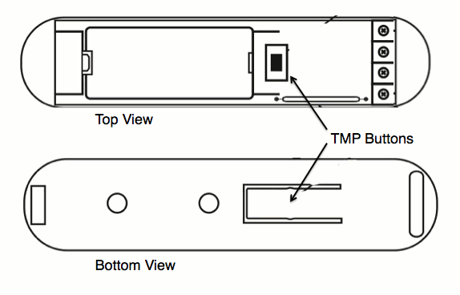

FIBARO Z-Wave Door/Window Sensor¶

Brief information¶
- Door sensor can detect closing and opening of any door/window or garage door openings. Door Sensor can also be paired with DS18B20 to input temperature sensor.
- The Door / Window Sensor has a unique feature in which it can automatically trigger pre-programmed scenes. (may require compatible controller)
- The Door/Window Sensor is extremely compact and is the smallest unit of this type available on the market. Its extremely lightweight and thin design makes it almost invisible on any door/window.
- The Fibaro Door / Window Sensor is available in seven colors. Select the best color match to your home interior designs and enjoy the undisturbed beauty, security and comfort.
- Z-Wave Certifed Sensor: Cert ID: ZC08-14070006/ Frequency Region: U.S./Canada/Mexico, Z-Wave Library Version: 4.55.06
How to add to VENUS app¶
To add device to VENUS, below actions are required:

- Press “Add button” (button ‘+’) in app
- Reset device: Triple-press TMP button
- Wait for VENUS scan & detect this device and inform in app
- Reset device again to complete adding device to VENUS
How to add/remove associated device(s) to¶
To add associated device(s) to this sensor, below action is required:
- Add z-wave notified-devices (which will be associated to this sensor) to VENUS
- Select Associate button and then select notified-device(s) to add
- Wake-up this sensor: triple-press TMP button
- If successful, pop-up notification displays in VENUS app
To remove associated device(s) from this sensor, below action is required:
- Select Associate button and then select notified-device(s) to remove
- Wake-up this sensor: triple-press TMP button
- If successful, pop-up notification displays in VENUS app
Configuration description¶
Alarm cancellation delay
- A period of time to cancel alarm from the last change status in device.
- Available: 0 ~ 65535 in seconds
- Default: 0
- Parameter 1, 2 bytes size
Device’s status change signalled by LED
- This setting enables/disables LED notification for each change in device.
- Available:
- Enable
- Disable
Default: Enable
Parameter 2, 1 byte size
IN input type
- Select type of IN input
- Available:
- INPUT_NC: Normal close
- INPUT_NO: Normal open
- INPUT_MONOSTABLE
- INPUT_BISTABLE
Default: INPUT_NC
Parameter 3, 1 byte size
Association control frame
- Type of control frame transmitted for association group 1, activated via IN input. The parameter allows you to specify the type of an alarm frame or to force control frames transmission (BASIC_SET)
- Available:
- ALARM GENERIC frame
- ALARM SMOKE frame
- ALARM CO frame
- ALARM CO2 frame
- ALARM HEAT frame
- ALARM WATER frame
- Control frame BASIC_SET
Default: Control frame BASIC_SET
Parameter 5, 1 byte size
Trigger signal level to associated devices
- Value of the parameter specifying the forced level of dimming/ope-ning roller blinds when “switch on”/”open” commands are sent to devices from association group no.1.
- Available:
- 1 ~ 99: Dim value
- Turn on associated device with last memorized dim value
Default: Turn on associated device with last memorized dim value
Parameter 7, 1 byte size
Alarm cancel transmission
- Deactivating transmission of the alarm cancelling frame or the control frame deactivating the device (Basic). It allows for disabling the function of deactivating the device and cancelling alarms for devices associated with IN input.
- Available:
- Send cancelling information
- Not send cancelling information
Default: Send cancelling information
Parameter 9, 1 byte size
Temperature change report
- The difference in temperature between 2 measured times exceeds this setting value will be reported to controller. Otherwise, ignore this change.
- Available: 0 ~ 255 units
- 16 unit = 1 celcius
- 0 ~ 255 is appropriated with 0 ~ 16 oC and 32 ~ 60.8 oF
Default: 8 (0,5 oC)
Parameter 12, 1 byte size
Broadcast alarm control frame
- Sending an alarm or control frame (for IN input, depending on parameter no.5 value), and TMP button alarm frame. The frame is sent in “broadcast” mode, i.e. to all devices within range - information sent in this mode is not repeated by the mesh network.
- Available:
- IN and TMP Broadcast mode inactive
- IN broadcast mode active, TMP broadcast mode inactive
- IN broadcast mode inactive, TMP broadcast mode active
- IN and TMP broadcast mode active
Default: IN and TMP Broadcast mode inactive
Parameter 13, 1 byte size